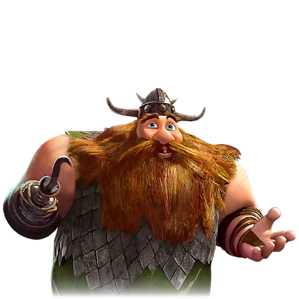

Pêcheur de Beurk, coéquipier de Baquet
| Rôle | Pêcheur, Habitant de Beurk |
| Affiliation | Tribu de Beurk |
| Particularité | Duo comique avec Baquet |
Mulch est le pêcheur de Beurk, toujours accompagné de son partenaire Baquet. Ce duo comique apporte une touche d'humour à la série. Malgré leur façade comique, ils sont des habitants courageux de Beurk qui participent à la défense de l'île quand c'est nécessaire. Mulch est reconnu par sa main crochet caractéristique.